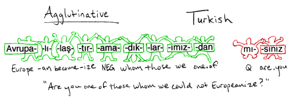
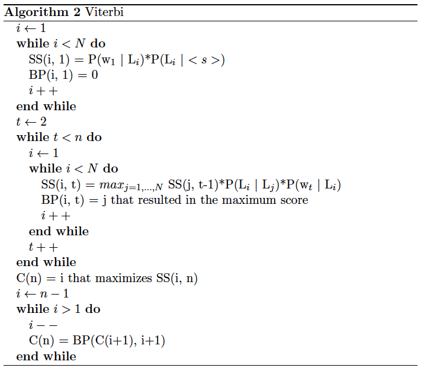

Morphology? What is it? Is there a cure?
Text by: Luísa Coheur
Morphology is the linguistics field dedicated to the study of the internal structure of words (morph = shape, logos = word).
Being able to determine the morphology of words can be extremely important to get, for instance, their accurate lemmas; it is also a fundamental step should a syntactic analysis be required. Many applications are based on some morphological processing. For instance, if you want to know whether two words in different languages have the same origin (organization vs. organização), that is, if they are cognates (another fancy word to impress your friends), morphology can help.
In this chapter we will study words’ constituents (morphologic parsing) and we will see different techniques to mark words in a text with morphosyntactic tags.
This chapter is particularly inspired by Jurasfsky’s book, previous Nuno Mamede’s slides and also the slides of Sudeshna Sarkar. All the silly jokes and mistakes are on me.
Dissecting words into morphemes
Words are constituted by (meaningful) units called morphemes. There are two types of morphemes:
- stems, which carry the primary of meaning of words;
- affixes, which change stems meaning and/or have grammatical functions. They come in different types:
- prefixes: added at the beginning of the word. For instance, anti from anti-motim, or des from desinteressante;
- suffixes: appear at the end of the word. An example is os from gatos, alunos, etc.
- infixes: are inserted inside the stem
- circumfixes: precede and follow the stem and are inserted at the same time. For instance, amanhecer has this type of affix.
- clitics: these are morpheme that function like a word, but that do not appear alone. Example: os in vi–os.
There are languages (called agglutinative Languages) where words can contain an impressive number of morphemes. Turkish, for instance, has many words with 9 or 10 morphemes.

Exercise 22: Dissecting Portuguese
Consider the word inacreditavelmente. Can you find a portuguese word with more morphemes? If you do, let me know.
Building words
There are many different ways of building words from a word stem. Here are some of them:
- Inflection: Doesn’t change the word class or the meaning of the word, considering the original stem. Examples are eats from eat (both verbs) and gatas from gato (both nouns).
- Derivation: Results in a word from a different word class or with a different meaning. Examples are do from undo (opposite meanings) and amigável from amigo (adjective and noun).
- Compounding: Combination of multiple word stems. doghouse and guarda-chuva are examples of this.
- Cliticization: Words with clitics, such as apagou-o.
- …
Just to show you how strange this can be, have the following example (for Hebrew), representing a case of Templatic morphology with triconsonantal stems:
Considering that lmd means to learn or study:
- CaCaC triggers lamad (he studied, …)
- CiCeC triggers limed (he taught, …)
- CuCaC triggers lumad (he was taught, …)
Original, isn’t it?
Part-of-speech tagging
Part-of-speech tagging or POS tagging is the process of automatically assigning a morpho-syntactic tag to each word in a text. The main problem here is our darling friend ambiguity, but not because there are many ambiguous words. The problem is that these ambiguous words are extremely frequent in texts.
We will study three main approaches: a) Rule-based; b) Hybrid; c) Stochastic.
Rule-based approach
The rule-based approach uses hand-crafted rules to tag a text. Usually, there are two main steps:
- With the help of a dictionary, you tag each word with all its possible labels;
- With the help of a set of (disambiguation) rules, you disambiguate these labels.
As an example, consider the sentence He had a book. After the first step, you might have:
- he he/pronoun
- had have/verbpast have/auxliarypast
- a a/article
- book book/noun book/verb
If there is a rule that states that if the previous word is an article, remove all the labels related with verbs, after the application of this rule, we obtain:
- he he/pronoun
- had have/verbpast have/auxliarypast
- a a/article
- book book/noun
An example of a rule-based tagger is the EngCG tagger. If you have time, give it a once-over.
Transformation based POS tagging
The transformation based POS tagging is also known as Brill Tagging. It is also rule-based, but its rules are learned from a labeled corpus (that is why is said to be an hybrid approach). It takes the following steps:
- Each word is tagged with the most frequent label;
- Transformational rules are learned from a labeled corpus (rules that replace labels);
- Transformational rules are applied until some stop condition is reached.
For instance, assume that you know that:
Then, the sentence He is expected to race tomorrow will be labeled as:
- he/PRN
- is/VBZ
- expected/VBN
- to/TO
- race/NN (not good!)
- tomorrow/NN
If you have a rule that says that you should Replace NN by VB when the previous label is TO, the correct labelling will be attained.
Stochastic approach
The target here is to choose the best sequence of tags,
for a certain sequence of words
That is, we want to calculate that maximizes , being the set of all possible tags’ sequences:
As it is difficult to calculate , we can use Bayes Rule:
and as does not depend on , our problem is now to calculate:
Note that:
- is the prior probability of the sequence of tags;
- is the likelihood of W being given T.
Exercise 23: Why is posterior distribution hard to calculate?
Think why it is more difficult to calculate than .
The Hidden Markov Models
Unfortunately, the previous formula is still too difficult to calculate and the famous Hidden Markov Models (HMM) are called to save the day. These models assume that the system in hands can be modeled as a Markov Process (remember?) with non observable (hidden) states. Basically, they assume that:
- The probability of occurrence of a word only depends on its label (that is, it doesn’t depend on other words);
- The probability of a tag only depends on the previous tag (this is called the bigram assumption).
Due to this, the following approximations can be done:
Therefore, the formula that we need to calculate is now given by:
The good news is that we now know how to calculate this:
Viterbi algorithm
For models such as HMM that contain hidden variables, the task of determining which of the variables is the source of an observable sequence is called decoding. The Viterbi algorithm is often used with HMMs and it seeks the best path; it is based on probabilities and uses the technique of dynamic programming (solve small problems and memorize the best solution).
Considering that:
- ;
- number of words in the given sequence ;
- SS is an array that registers the best punctuation of the best sequence found until a certain position with label ;
- BP is an array that registers the best probability of a transition from the previous to the current state;
- C is an array that registers the best sequence of labels.
Then, the Viterbi algorithm works as follows:

Exercise 24: Viterbi
Consider the labels N and V, and the sequence of words A B A. Knowing the following probabilities, use Viterbi to calculate the best sequence of labels for that sequence of words:
- ,
- , , ,
- , , ,
Very brief review of Portuguese morphology – back to school
Each word can have more than one morphological tag, according with its function in a sentence. For instance, you can say Estava uma noite escura | branca | clara | amarela | verde, but you can’t say Estava uma noite de or Estava uma noite dormir. That is, if you have an adjective, you can replace it by another adjective, but not with a preposition or a verb (an exception are nouns and pronouns). You don’t remember what a pronoun or a preposition is? Well, let us review some morphological classes (remember this, because you will need it for the Syntax chapter); capitalized words illustrate each class:
- Nouns: JOAQUIM estava a ler na SALA quando ouviu um BARULHO no JARDIM.
- Determiners: Era UM ruído estranho, O mais estranho de sempre, UM leve e suave arrastar.
- Pronouns: _Sem que ELE o conseguisse evitar, sentiu o SEU coração a começar a bater com força.
- Verbs: DIRIGIU-SE à porta, mas PAROU, com a maçaneta na mão.
- Adjectives: Sentia um pavor INDESCRITÍVEL a entranhar-se no corpo.
- Adverbs: LENTA e FIRMEMENTE um frio glaciar subia por ele acima.
- Prepositions: O que estaria DO outro lado DA porta? O que estaria NO jardim?
- Conjunction: Tremendo, Joaquim abriu a porta E espreitou.
- Interjections: Nem teve tempo de gritar “AQUI D’EL REI”, “DIACHO” ou “IRRA”.